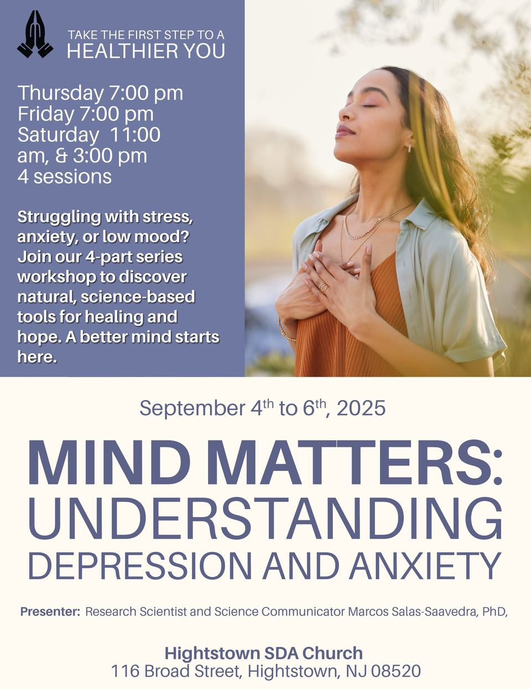

Volunteer Teaching in Bangladesh
January–February 2025 — I was invited by the Be Well Institute, a non-profit education center in rural Bangladesh, to design and deliver an undergraduate-level short course on soil science and biogeochemical nutrient cycles. The course was shaped to local agriculture and emphasized simple, reliable measurements students could repeat at home or in the field.
Hands-on: We built a practical toolkit together—safe sampling and handling, temperature and pH logging, moisture checks, basic respiration measurements, and simple QA ideas (duplicates, blanks) so data are trustworthy.
Applications: Students monitored compost and soils over time, connected mineral micronutrients to plant health, and learned to spot meaningful changes versus noise. The program director, Mr. Eugene Prewitt, reported stronger engagement and clearer understanding across the group.


Outreach
I enjoy translating geoscience for wider audiences—connecting climate, oceans, and everyday choices. This includes public talks, community events, and conversations with students and professionals outside my field.
- University of Dhaka Podcast. A conversation on global and local environmental issues and practical steps individuals can take. Watch
- Community presentations. Bite-size sessions on coral reefs, water quality, and climate variability with simple demos and Q&A.
- Mentoring. Guidance on lab practice, research ethics, and building transparent, reproducible workflows.
Community Workshop
Mind Matters — Understanding Depression & Anxiety (past event, September 2025)
I created Mind Matters — Understanding Depression & Anxiety because I’ve long been fascinated by the mind—its incredible power and its fragility when we neglect or misuse it. As a teenager I walked through a season of depression myself, which left me with deep empathy and a desire to make help practical and accessible. As a researcher, I also see the data: depression and anxiety are rising, and too many people suffer in silence. That’s why I’ve invested time studying the topic, drawing insight from Mind, Character, and Personality (Ellen G. White) and completing training in Mental Health First Aid as well as certification to direct the community format of Dr. Neil Nedley’s Depression & Anxiety Recovery Program (DARP). This workshop brought those threads together—science, lived experience, and faith-informed wisdom—to reduce stigma, explain what’s happening in the brain, and offer clear, doable steps toward hope and recovery.
This was a four-part community workshop on stress, anxiety, and low mood, held in September 2025. It shared science-based tools for understanding and hope. The event was educational and did not replace professional medical care.
- Dates: September 4–6, 2025 (Thu–Sat) — past event
- Schedule: Thu 7:00 pm; Fri 7:00 pm; Sat 11:00 am & 3:00 pm (4 sessions)
- Venue: Hightstown SDA Church, 116 Broad Street, Hightstown, NJ 08520
- Presenter: Marcos Salas-Saavedra, PhD

If you need help now
If you or someone else is in immediate danger, contact your local emergency number.
- Chile — Salud Responde 600 360 7777.
- US — 988 Suicide & Crisis Lifeline.
- Otherwise — your local emergency number.